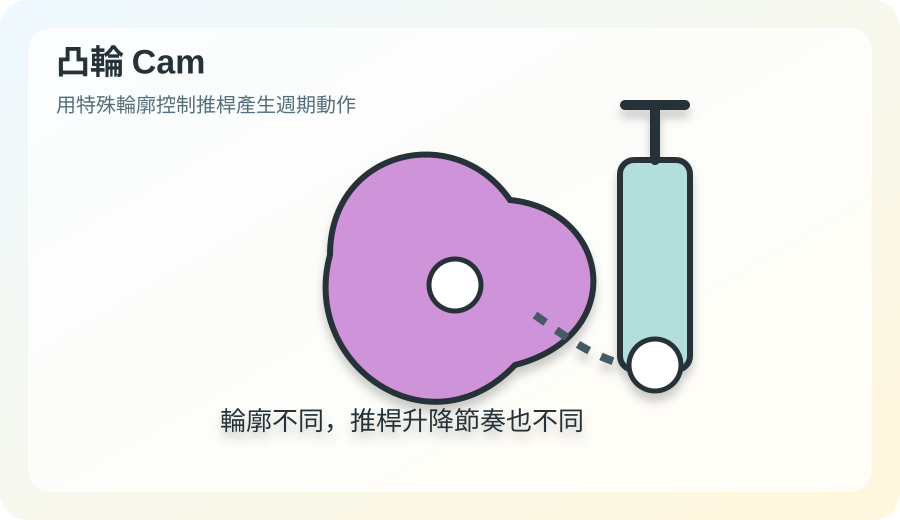
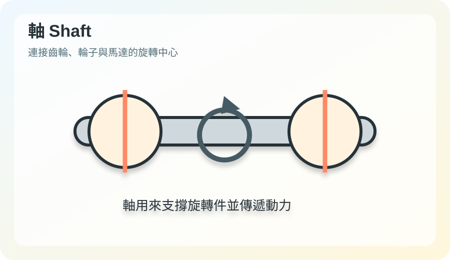

齒輪
用來傳遞旋轉動力。小齒輪帶大齒輪時，轉速變慢、力量變大；大齒輪帶小齒輪時，轉速變快、力量變小。

蝸桿與蝸輪
蝸桿像螺絲，帶動蝸輪旋轉，常見於需要大減速與定位的機構。

連桿
連桿透過關節連接，可把旋轉轉成擺動或往復運動，常用於仿生獸、木牛流馬與步行模型。

凸輪
凸輪的外形會影響推桿升降，適合用來製造週期性動作。

軸
軸是旋轉中心，負責支撐齒輪、輪子、滑輪等零件並傳遞動力。

馬達
馬達把電能轉換為旋轉動力，是積木模型與自動化機構的常見動力來源。
傳動機構
傳動機構是由齒輪、皮帶、鏈條、軸、連桿等組合而成，用來把動力傳到目標位置。

積木模型
積木模型讓學生能實際組裝、觀察、測試與修正，比單純看文字更容易理解機械原理。